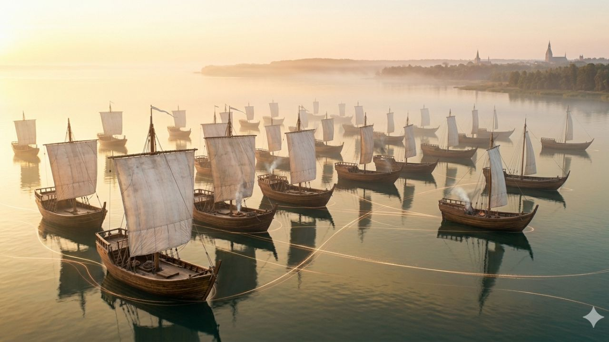
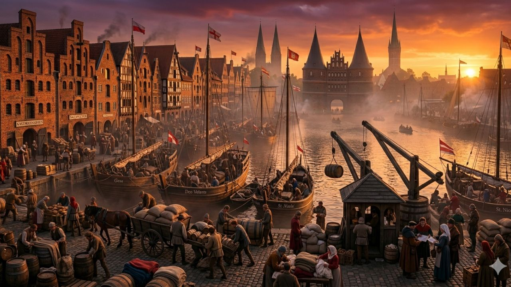
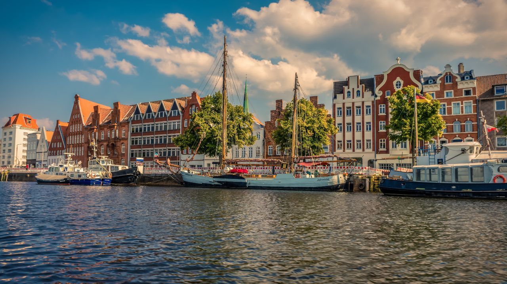

Présentation
La Hanse est une alliance de villes et de marchands d’Europe du Nord. Elle se développe à partir du XIIᵉ siècle et disparaît progressivement au XVIIᵉ siècle. Elle s’étend du nord de l’Europe jusqu’au centre de l’Allemagne et regroupe environ 200 villes.

Organisation et objectifs
La Hanse a plusieurs objectifs. Elle permet aux villes de se développer économiquement. Les marchands s’unissent pour se protéger contre les pirates et pour faciliter le commerce.Ils organisent ensemble le transport des marchandises par voie maritime, en utilisant des navires marchands.Les villes de la Hanse coopèrent pour renforcer le commerce et assurer la sécurité des échanges.

Son grand succès
La Hanse a connu un grand succès au Moyen Âge parce qu’elle contrôlait le commerce et que de nombreuses villes sont devenues riches. Elle a permis aux villes de se développer, comme par exemple Lübeck, Brême et Hambourg, et a permis aux marchands d’acquérir une grande richesse.

Et Lubeck?
Lübeck est une ville centrale de la Hanse. Elle joue un rôle majeur dans le commerce et est surnommée "la reine de la Hanse“. Elle est aujourd’hui inscrite au patrimoine mondial de l’UNESCO car elle témoigne de la puissance économique de la Hanse et de son histoire.
Déclin
La Hanse décline entre le XVe et le XVIIe siècle. Elle perd de son importance à cause de la concurrence de nouvelles routes commerciales et de la montée en puissance de pays comme l’Angleterre et les Provinces-Unies (Pays-Bas).